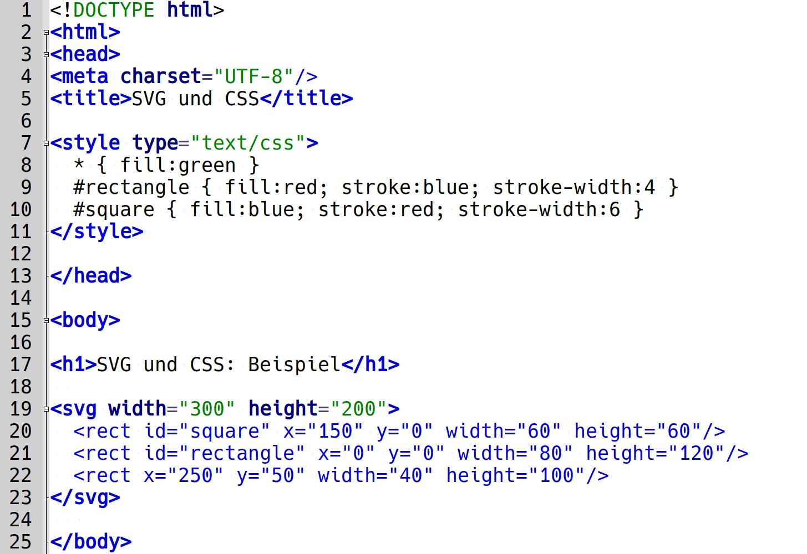
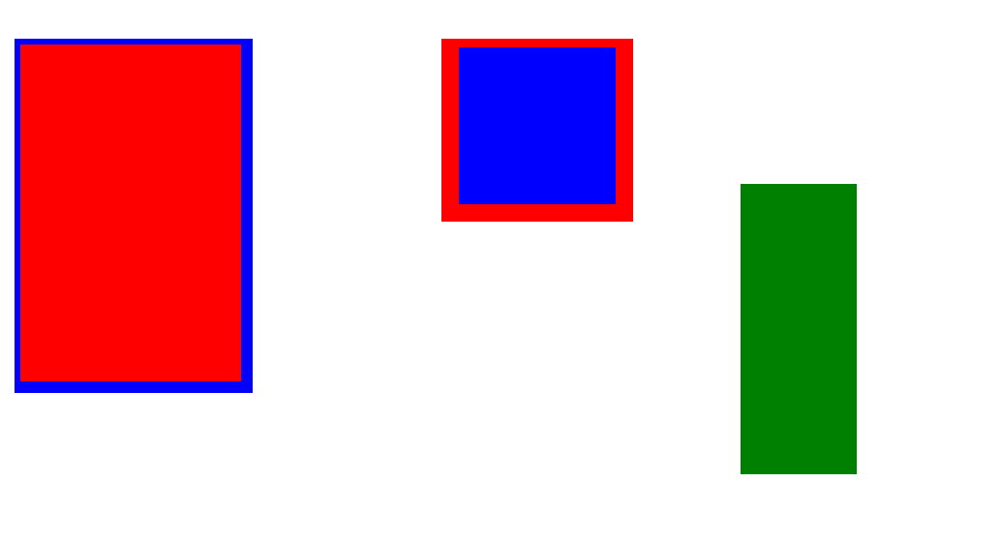
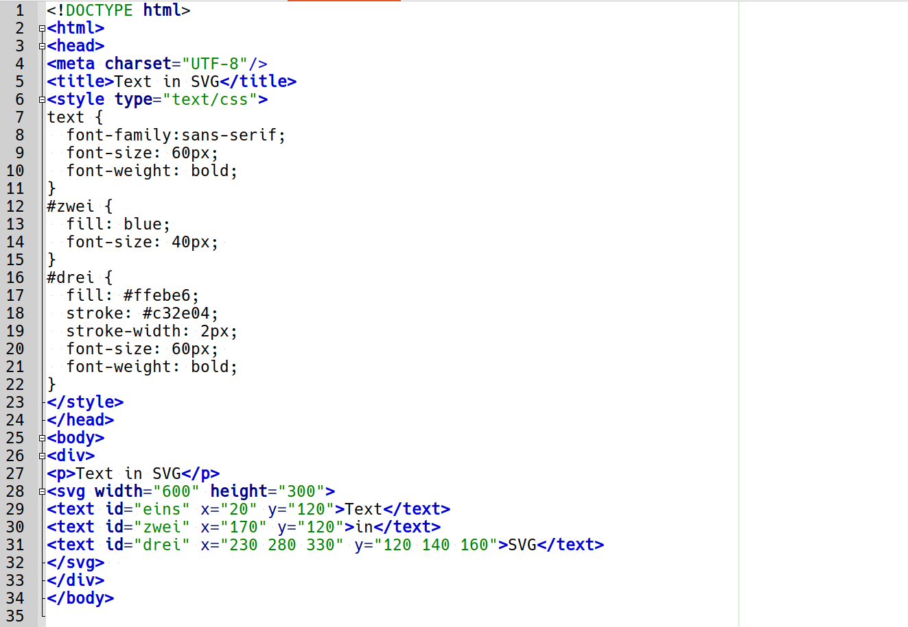
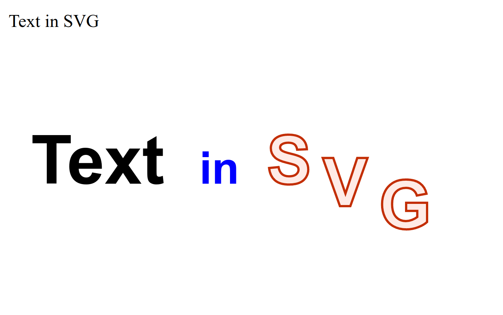
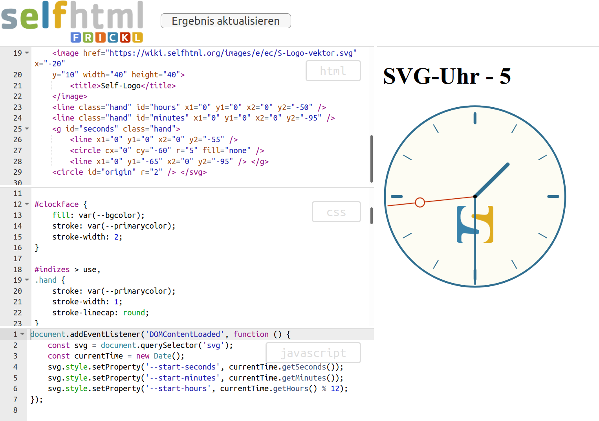
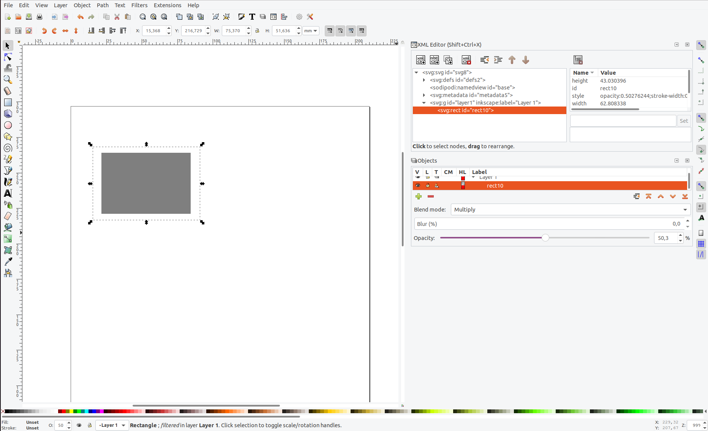
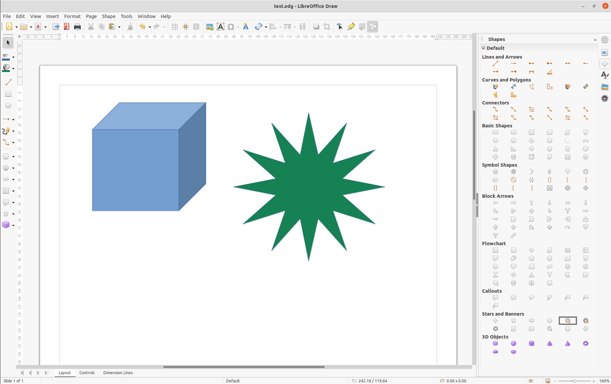
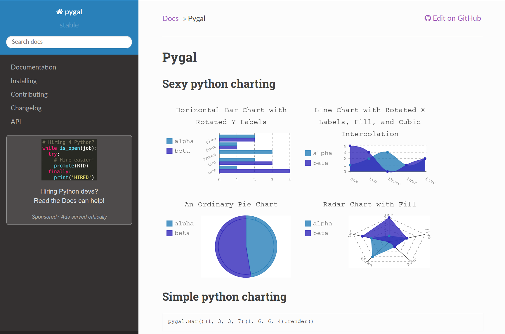

# SVG: Scalable Vector Graphics <br/> <hr/> <br/>Prof. Dr. Christof Schöch <br/> <br/> <hr/> <p><strong>Modul Auszeichnungssprachen<br/>MSc. Digital Humanities, Universität Trier</strong></p> <hr/> <img height="60" data-src="img/basics/uni-trier.png"> -- ## Überblick 1. Einstieg: Was ist SVG? 1. Grundformen -- ## (1) Einstieg: Was ist SVG? --- ### Was ist SVG? * Ein XML-basiertes System zur Darstellung von Grafiken <!-- .element: class="fragment" data-fragment-index="1" --> * Folgt den allgemeinen Regeln von XML <!-- .element: class="fragment" data-fragment-index="2" --> * Kann allein stehen oder in HTML (oder Markdown) integriert werden <!-- .element: class="fragment" data-fragment-index="3" --> * Kann von Hand geschrieben oder generiert werden <!-- .element: class="fragment" data-fragment-index="4" --> * Enthält auch interaktive oder dynamische Elemente <!-- .element: class="fragment" data-fragment-index="5" --> * Wird in einem 2D-Koordinatensystem verortet <!-- .element: class="fragment" data-fragment-index="6" --> --- ### Einfaches Beispiel <svg width="300" height="200"> <rect x="0" y="0" width="150" height="200" fill="black" /> <rect x="150" y="0" width="150" height="200" fill="red" /> <circle cx="250" cy="50" r="20" fill="blue" stroke="white" stroke-width="3"/> </svg> <br/><br/> ```xml <svg width="300" height="200"> <rect x="0" y="0" width="150" height="200" fill="black" /> <rect x="150" y="0" width="150" height="200" fill="red" /> <circle cx="250" cy="50" r="20" fill="blue" stroke="white" stroke-width="3"/> </svg> ``` -- ## (3) SVG: Grundformen --- ### Grundformen * Rechteck `rect` * Kreis `circle` * Ellipse `ellipse` * Linie `line` * Polygonzug `polyline` * Polygon `polygon` --- ### Rechteck `rect` * `x`: horizontale Position der linken oberen Ecke * `y`: vertikale Position der linken oberen Ecke * `width`: Breite * `height`: Höhe --- ### Rechteck: Beispiel <svg width="300" height="200"> <rect x="0" y="0" width="250" height="150" fill="green" stroke="black" stroke-width="5" /> </svg> <br/><br/> ```xml <svg width="300" height="200"> <rect x="0" y="0" width="250" height="150" fill="green" stroke="black" stroke-width="5" /> </svg> ``` --- ### Kreis `circle` * `cx`: horizontale Position des Mittelpunktes (`c` = center) * `cy`: vertikale Position des Mittelpunktes * `r`: Radius --- ### Oval / Ellipse `ellipse` * `cx`: horizontale Position des Mittelpunktes * `cy`: vertikale Position des Mittelpunktes * `rx`: horizontaler Radius * `ry`: vertikaler Radius --- ### Linie `line` * `x1`: horizontaler Startpunkt * `y1`: vertikaler Startpunkt * `x2`: horizontaler Endpunkt * `y2`: vertikaler Endpunkt --- ### Polygonzug `polyline` * Ein Verbund von Linien, der durch mehrere Koordinatenpunkte definiert ist. * Der Polygonzug kann offen sein. * `points`: enthält alle Punkte der Polylinie (ax,ay etc.) --- ### `polyline`: Beispiel <svg width="500" height="300"> <polyline id="eins" points="210,10 240,40 210,70 240,100 210,130 240,160 210,190" fill="none" stroke="black" stroke-width="3"/> </svg> ```xml <svg width="500" height="300"> <polyline id="eins" points="210,10 240,40 210,70 240,100 210,130 240,160 210,190" fill="none" stroke="black" stroke-width="3"/> </svg> ``` --- ### Polygon `polygon` * Ein Verbund von Linien, der durch mehrere Koordinatenpunkte definiert ist * Das Polygon wird automatisch geschlossen * `points`: enthält alle Punkte der Polylinie (ax,ay etc.) --- ### Design-Merkmale * Für Linien * `stroke`: Linienfarbe * `stroke-width`: Linienbreite * `stroke-opacity`: Transparenz * Für Flächen * `fill`: Farbe der Füllung --- ### Beispiel: Geometrische Formen <svg width="300" height="200" viewbox="0 0 10 11"> <desc>Wappen der Schweiz</desc> <rect x="0" y="0" width="10" height="6" fill="red" /> <circle cx="5" cy="6" r="5" fill="red" /> <line id="quer" x1="2" y1="5" x2="8" y2="5" stroke="white" stroke-width="2" /> <line id="hoch" x1="5" y1="2" x2="5" y2="8" stroke="white" stroke-width="2" /> </svg> <br/> <br/> ``` <svg width="300" height="200" viewbox="0 0 10 11"> <desc>Wappen der Schweiz</desc> <rect x="0" y="0" width="10" height="6" fill="red" /> <circle cx="5" cy="6" r="5" fill="red" /> <line id="quer" x1="2" y1="5" x2="8" y2="5" stroke="white" stroke-width="2" /> <line id="hoch" x1="5" y1="2" x2="5" y2="8" stroke="white" stroke-width="2" /> </svg> ``` -- ## (3) Styling mit CSS --- ### Grundidee * Wie bei HTML: Trennung von Inhalt und Darstellung <!-- .element: class="fragment" data-fragment-index="1" --> * Bei SVG: Darstellung über Attribute oder CSS möglich <!-- .element: class="fragment" data-fragment-index="2" --> * Vorteile von CSS-Nutzung <!-- .element: class="fragment" data-fragment-index="3" --> * SVG-Code wird übersichtlicher * Design-Änderungen sind leichter umzusetzen * Mischform ist möglich <!-- .element: class="fragment" data-fragment-index="4" --> * Wiederkehrende Designs im HEAD definieren * Einmalige Designs direkt beim SVG-Element --- ### SVG+CSS: Einfaches Beispiel (Code)  <small><a href="https://raw.githubusercontent.com/dh-trier/markup/main/examples/SVG/svg-and-css.html">Code zum Download</a></small> --- ### SVG+CSS: Einfaches Beispiel (Ergebnis)  <small><a href="https://raw.githubusercontent.com/dh-trier/markup/main/examples/SVG/svg-and-css.html">Code zum Download</a></small> --- ### Verlauf mit `linearGradient` <svg width="600" height="200"> <defs> <linearGradient id="verlauf1" x1="0%" y1="0%" x2="50%" y2="100%"> <stop offset="0%" stop-color="#dfac20" /> <stop offset="100%" stop-color="#3983ab" /> </linearGradient> </defs> <ellipse cx="300" cy="80" rx="150" ry="70" fill="url(#verlauf1)"/> </svg> ``` <svg width="600" height="200"> <defs> <linearGradient id="verlauf1" x1="0%" y1="0%" x2="50%" y2="100%"> <stop offset="0%" stop-color="#dfac20" /> <stop offset="100%" stop-color="#3983ab" /> </linearGradient> </defs> <ellipse cx="300" cy="80" rx="150" ry="70" fill="url(#verlauf1)"/> </svg> ``` -- ## (4) Text in SVG --- ### Text in SVG: Einfaches Beispiel (Code)  <small><a href="https://raw.githubusercontent.com/dh-trier/markup/main/examples/SVG/text-in-svg.html">Code zum Download</a></small> --- ### SVG+CSS: Einfaches Beispiel (Ergebnis)  <small><a href="https://raw.githubusercontent.com/dh-trier/markup/main/examples/SVG/text-in-svg.html">Code zum Download</a></small> -- ## Interaktion und Animation --- ### Beispiel für Interaktion: `hover` (Code) ```xml <style type="text/css"> #kreis:hover { r: 100px; fill: red; } </style> ``` ```xml <svg width="600" height="400"> <circle id="kreis" cx="150" cy="100" r="80" fill="#c32e04" /> </svg> ``` --- ### Beispiel für Interaktion (Ergebnis) <style type="text/css"> #kreis:hover { r: 100px; fill: red; } </style> <div> <svg width="600" height="400"> <circle id="kreis" cx="150" cy="100" r="80" fill="#c32e04" /> </svg> </div> <small><a href="https://raw.githubusercontent.com/dh-trier/markup/main/examples/SVG/interactive.html">Code zum Download</a></small> --- ### Beispiel: interaktiver Plot <embed src="img/E11/sentlen-romans_101+500.svg" height="600" /> --- ### Beispiel: Animation (Uhr) <a href="https://wiki.selfhtml.org/extensions/Selfhtml/frickl.php/Beispiel:SVG-Uhr-5.html#view_result"></a> <small> https://wiki.selfhtml.org/extensions/Selfhtml/frickl.php/Beispiel:SVG-Uhr-5.html#view_result </small> -- ## (5) Tools für SVG --- ### GUI: Inkscape <a href="https://inkscape.org/de/"></a> https://inkscape.org/de/ --- ### GUI: LibreOffice Draw (SVG-Export)  --- ### Python: pygal <a href="http://www.pygal.org/en/stable/index.html"></a> http://www.pygal.org/en/stable/index.html --- ### Pygal-Beispiel (Plot) <embed src="examples/SVG/barchart.svg" height="550" /> --- ### Pygal-Beispiel (Code) ```python import pygal data = [("IE",19.5), ("Firefox", 36.6), ('Chrome', 36.3), ('Safari', 4.5), ("Opera", 2.3)] chart = pygal.HorizontalBar() chart.title = 'Browser usage in February 2012 (in %)' for item in data: chart.add(item[0], item[1]) chart.render_to_file("barchart.svg") ``` -- ## Abschluss --- ### Vorteile von SVG * Vektorgrafiken skalieren besser als Pixelgrafiken <!-- .element: class="fragment" data-fragment-index="1" --> * Kleinere Vektorgrafiken brauchen sehr wenig Speicherplatz <!-- .element: class="fragment" data-fragment-index="2" --> * SVG kann direkt, ohne separate Datei, in HTML eingebettet werden <!-- .element: class="fragment" data-fragment-index="3" --> * Kann auch interaktive Elemente und Animationen enthalten <!-- .element: class="fragment" data-fragment-index="4" --> * Gegenüber HTML Canvas: kein JavaScript nötig <!-- .element: class="fragment" data-fragment-index="5" --> * Vor allem für Diagramme und Charts geeignet; weniger für Fotos o.ä. <!-- .element: class="fragment" data-fragment-index="6" --> --- ### Lektürehinweise Referenzlektüre * "Einstieg in SVG", in: SelfHTML Wiki, https://wiki.selfhtml.org/wiki/SVG/Tutorials/Einstieg. (knappe Einführung) Weitere Empfehlungen * Amelia Bellamy-Royds, Kurt Cagle und Dudley Storey. *Using SVG with CSS3 and HTML5. Vector Graphics for Web Design*. O'Reilly 2018. (Umfassend und gut geschrieben.) --- ### Danke! <br/><br/> <br/><br/> <br/><br/> <hr/> <small> <br/>Lizenz: <a href="https://creativecommons.org/licenses/by/4.0/">Creative Commons Attribution (CC BY)</a>, 2021. </small> <hr/>